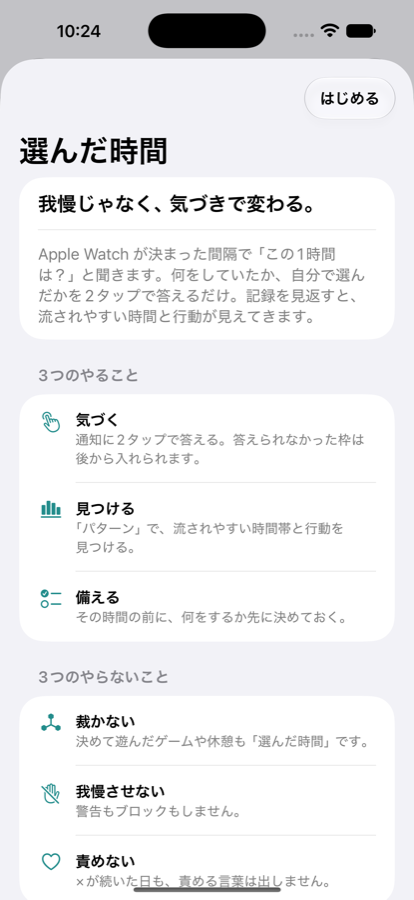
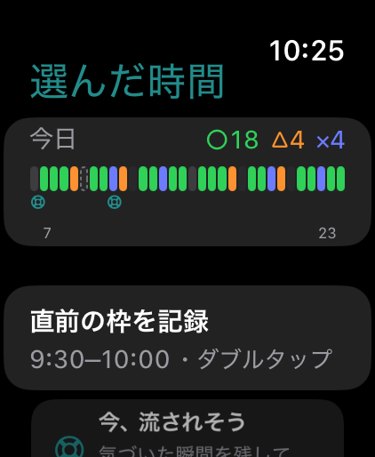
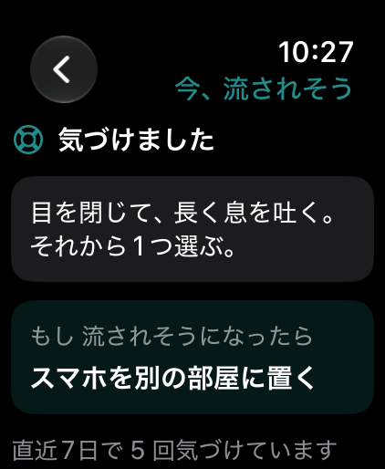
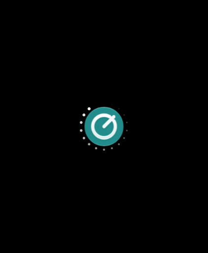
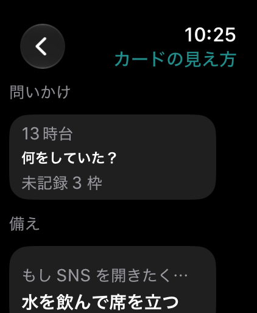
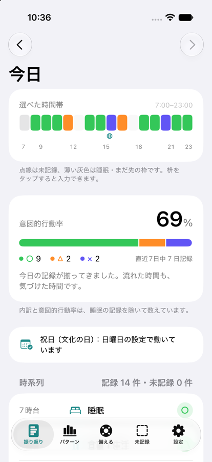
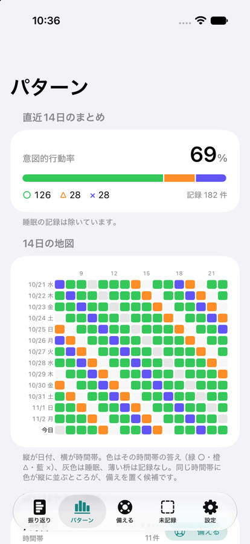
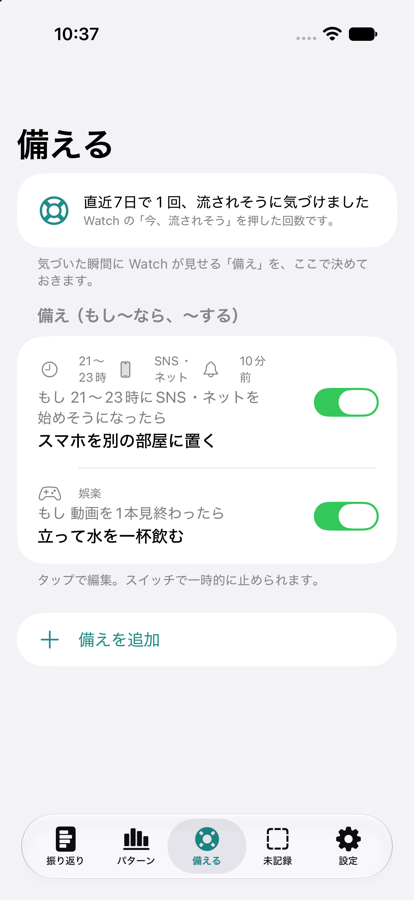
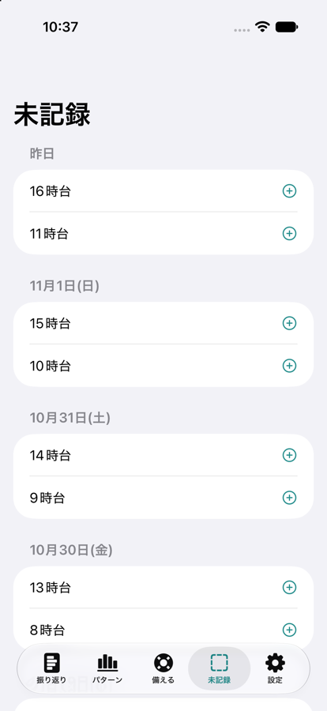

選んだ時間
その時間、
自分で選んだ？
Apple Watch の通知に 2 タップで答えるだけ。何をしていたか、自分で選んだか。
記録を見返すと、流されやすい時間と行動が見えてきます。
裁かない我慢させない責めない

記録は手首の上で、2 タップ
通知が来たら「何をしていた？」→「自分で選んだ？（○△×）」。答えは成績ではなく、気づきの印です。




iPhone で、1 日と 14 日を見渡す
○ は緑、△ は橙、× は藍。× に赤は使いません。




3 つのやらないこと
裁かない決めて遊んだゲームも休憩も「選んだ時間」です。
我慢させない警告もブロックもしません。
責めない× が続いた日も、責める言葉は出しません。
テストに参加する（TestFlight）
いまは友達向けのテスト版です。iOS 27 以上の iPhone と、watchOS 27 以上の Apple Watch が必要です。
- App Store で「TestFlight」アプリを入れる。
- 招待リンク（LINE などでお送りします）を iPhone で開いて「インストール」。
- Watch アプリは自動で入ります。入らなければ iPhone の「Watch」アプリ →「選んだ時間」→ インストール。
- Watch でアプリを開き、通知を許可する。
記録は iPhone と Apple Watch の中にだけ保存され、外部には送られません。感想は TestFlight の「フィードバックを送信」から。